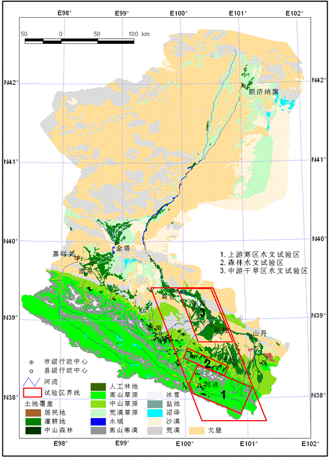
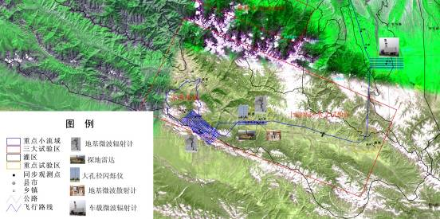
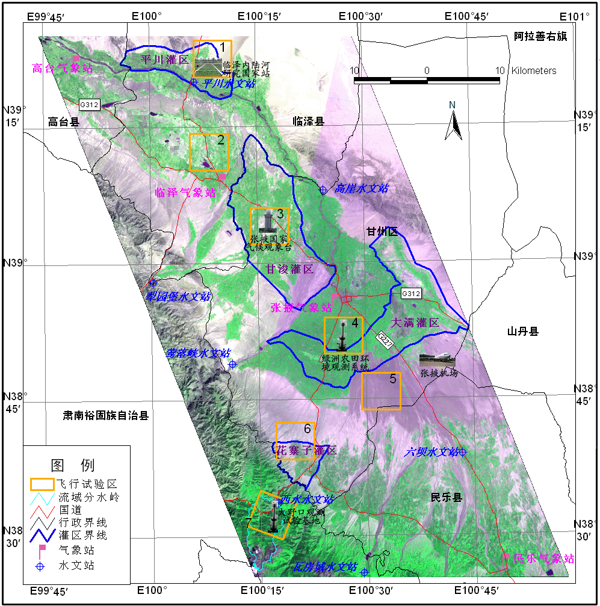

流域尺度的研究区选定为典型的内陆河流域――黑河流域，面积约12.87万km2，是我国第二大内陆河流域，位于东经96°42′～102°00′，北纬 37°41′～42°42′，包括高山冰雪带、森林草原带、平原绿洲带及戈壁荒漠带等不同的景观类型。黑河流域是我国内陆河流域研究的基地，具有良好的研究基础、完备的观测系统和丰富的数据积累。综合考虑内陆河流域的主要水文过程，包括寒区水文、森林水文、生态水文及干旱区水文，在全流域内，选择三个具有代表性的重点试验区开展综合观测试验。
综合考虑内陆河流域的主要水文过程，包括寒区水文、森林水文、生态水文及干旱区水文，“黑河流域遥感－地面观测同步试验”在全流域内，选择了三个具有代表性的重点试验区开展综合观测试验。
图1 黑河流域所处位置示意图
上游寒区水文试验区（Cold Region Hydrology Experiment Area）选择在黑河上游东侧（图3），面积约？？平方公里，平均海拔高度。该区（请补充上游寒区水文实验区介绍性文字）。 上游寒区水文试验区包括重点试验区、加密观测区和观测点。重点试验区为黑河上游东支八宝河子流域。加密观测区选择冰沟小流域，开展降雨降雪观测，地面－遥感同步观测，以及寒区水文过程观测。观测点选择冰沟垭口、俄博岭垭口、野牛山头滩垭口、海潮坝、阿柔乡和扁都口，试验区布置见图3。
图2 上游寒区水文试验区
阿柔乡（100°26′N，38°03′E）位于八宝河流域中部河谷地带，海拔3000m，地势开阔平坦，交通便利，主要开展积雪和地表冻融状态的遥感－地面同步观测，并长期观测季节冻土的水热变化特征。
冰沟流域（38°01′～38°04′N，100°12′～100°18′E）位于黑河上游东支二级支流上（图5），海拔3450～4400m，平均为3920m。流域面积30.48km2，平均宽度3.59km，植被分布面积19.82km2，占流域总面积的65％左右。气象场年平均气温-2.5℃，最低气温-30.8℃，最高气温24.8℃，流域源头的年平均气温为-7℃。季节性积雪厚度约为0.5m，最深达0.8～1.0m。多年冻土下界可能在3400m左右。长期观测积雪、冻土、气象、植被等寒区水文变量与参数，并开展地基微波辐射计和野外光谱仪等项目综合观测。 补充历史上开展的积雪观测
图5 冰沟流域分布图
选择民乐县扁都口（100°56′N，38°13′E）以北平坦开阔地，平均海拔2800m，观测瞬时积雪参数及地表冻融状态，并与卫星过境同步，观测地表温度，验证被动微波地表冻融分类算法。
森林水文试验区(Forest Hydrology Experiment Area，简称FHEA)，选择在黑河上游祁连山区（图6），面积约？？km2,平均海拔。研究区内？？（补充森林水文试验区介绍性文字） 选择大野口、海潮坝等一系列山前子流域，在景观类型上涵盖了冰川、积雪、多年冻土、高寒草原和森林。该试验区的主要观测对象为森林水文过程。
图6 森林水文和生态试验区位置图
大野口流域 (经纬度范围？？)位于？？，面积为100 km2，属高寒干旱半干旱气候（图7）。区内自然条件复杂，水热条件差异大，形成了多种具有明显垂直梯度和水平差异的植被类型和土壤类型。海拔从低到高，植被类型依次为山地荒漠植被、山地草原植被、山地森林草原植被、亚高山草甸植被、高山冰雪植被；土壤类型依次为山地灰钙土、山地栗钙土、山地灰褐土、亚高山灌丛草甸土、高山寒漠土。在各类土壤中山地灰褐土和亚高山灌丛草甸土是生长森林的土壤，山地灰褐土分布在海拔2400～3300 m地带，是乔木林的主要分布带；亚高山灌丛草甸土分布在海拔3300～4000 m 亚高山地带，是湿性灌木林的主要分布带。 研究区内现有水源林？？？hm2 ，主要为青海云杉林、祁连圆柏林和灌木三大类型。建群种青海云杉成块状分布在实验区海拔2400～3300 m 阴坡和半阴坡地带，与阳坡草场交错分布；祁连圆柏呈小块状分布于阳坡、半阳坡；灌木优势种有金露梅、箭叶锦鸡儿、吉拉柳等；草本主要有珠芽蓼、黑穗苔草等 研究区显著的垂直地带性分异规律以及分布广泛的青海云杉林和灌木林使其成为研究森林水文学的理想区域；并且甘肃省水源涵养林院在该流域内布设有系统的气象和水文观测系统，开展了大量生态样方调查，有研究基础和数据积累。
图7大野口流域及其地面观测系统
干旱区水文试验区（Arid Region Hydrology Experiment Area）选择在黑河中游张掖、临泽和高台一带(图9)。该试验区内，以黑河干流莺落峡和正义峡两个水文站为地表水输入和输出控制点，形成一个完整的水循环系统。 试验区沿黑河主干流从张掖绿洲延伸到临泽和高台绿洲，是由人工绿洲生态系统、绿洲—荒漠过渡带生态系统、荒漠草原生态系统、荒漠生态系统和水域生态系统共同组成的荒漠绿洲景观系统。中游干旱区降水量一般小于200mm（由东南向西北减少），农业生产通过渠灌和井灌利用了流域内大量的水资源，是水资源耗用区域，主导着流域水循环和水文过程。
图x 盈科草原观测区观测仪器布置图
图x 临泽绿洲与荒漠过渡带观测站仪器布置图
图x 张掖城区观测站仪器布置图